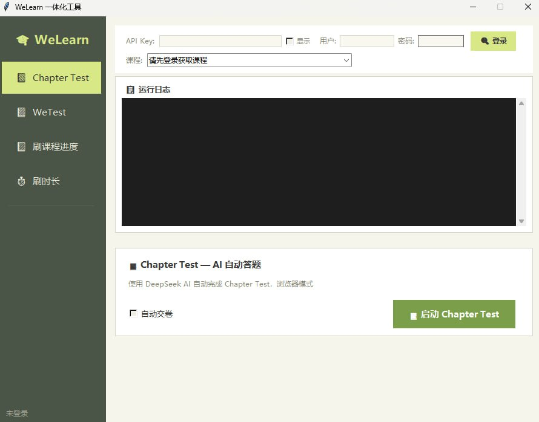

Windows 桌面工具，解压即用。基于 DeepSeek AI 云端引擎，自动完成 Chapter Test、WeTest、课程进度和学习时长。绿色免安装，不占本地算力。

从自动答题到挂时长，一套工具搞定 WeLearn 平台所有任务。
自动登录浏览器，抓取题目并调用 DeepSeek AI 云端作答。支持选择题、判断题、填空题和简答题，准确率 98%+。无需人工干预，批量完成章节测试。
粘贴 WeTest 测试链接，工具自动解析题目并逐题作答。支持随机延迟模拟人工操作，避免被检测。连考连过，稳定通过。
批量遍历课程章节，自动标记学习进度。支持自定义速度与重试策略，覆盖全部章节类型。一次配置，全自动跑完整个课程。
模拟在线状态稳定挂满时长。智能保活机制防止掉线，网络波动自动重连。支持多课程同时挂机，最大化效率。
解压 → 双击 startup.bat → 自动安装依赖 → 填 Key 即用。不写注册表、不留残留，U 盘也能带走。
纯文字题目通过云端 API 智能作答，无需本地 GPU。支持批量并发请求，速度远超人工。
所有智能逻辑跑在云端，集成显卡轻薄本也能流畅运行。真正零门槛，有网就能用。
Python + Tkinter GUI，DeepSeek 云端 API。解压 45MB，双击即用。
下载压缩包，解压到任意目录。推荐 D 盘避免权限问题。
运行 startup.bat，自动检测安装 Python 依赖。
填入 DeepSeek API Key（仅需一次），Key 本地安全存储。
选择任务类型点开始，工具自动运行，完成推送通知。